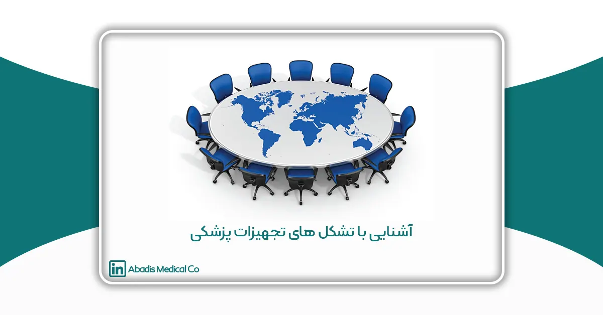

هدف این مقاله آشنایی و بهدست آوردن تصویری از تشکلهای صنعت تجهیزات پزشکی است؛ که در این مقاله قصد داریم به معرفی برخی از این تشکلها و اتحادیهها بپردازیم.
اتحادیه تولید کنندگان و صادر کنندگان تجهیزات پزشکی ایران (ISOMEE)
معرفی اتحادیه تولیدکنندگان و صادرکنندگان تجهیزات پزشکی
اتحادیه تولیدکنندگان و صادرکنندگان تجهیزات پزشکی ایران فعالیت خود را از سال 89 آغاز نموده است؛ در حال حاضر بیش از 130 شرکت تجهیزات پزشکی عضو این اتحادیه هستند.
اعضای هیئت مدیره کنونی این اتحادیه:
عبدالرضا یعقوب زاده (رئیس هیئت مدیره اتحاديه توليدکنندگان و صادرکنندگان تجهيزات پزشکي ايران و مدیر عامل شرکت پویندگان راه سعادت)، دکتر ساقی باقری نیا (منشی هیئت مدیره اتحاديه توليدکنندگان و صادرکنندگان تجهيزات پزشکي ايران و مدیرعامل شرکت صنایع آزمایشگاهی و داروئی انیسان)، دکتر علی عماری اللهیاری (نایب رئیس دوم اتحاديه توليدکنندگان و صادرکنندگان تجهيزات پزشکي ايران و رئیس هیئت مدیره پویندگان پزشکی پردیس)، مهران رضایی (عضو اصلی هیئت مدیره اتحاديه توليدکنندگان و صادرکنندگان تجهيزات پزشکي ايران)، محمدرضا محمد (خزانه دار)، سعید باغبانی جاوید (منشی)، سید یوسف ابطحی (بازرس اصلی)، حمیدرضا کاویانی (بازرس علی البدل)
اساسنامه اتحادیه تولیدکنندگان و صادرکنندگان تجهیزات پزشکی
اهداف اتحادیه تولیدکنندگان و صادرکنندگان تجهیزات پزشکی
هدف اصلی این اتحادیه ارتقا سطح تولید تجهیزات پزشکی ایرانی، بالابردن کیفیت و رقابت با علم روز دنیا، صادرات به بازارهای جهانی و حمایت از شرکتهای دانش بنیان می باشد.
همچنین از دیگر اهداف این اتحادیه می توان به موارد زیر اشاره کرد:
- برنامهریزی برای حضور موثر در مراکز مهم سیاستگذاری و تصمیمگیری مرتبط با حیطه فعالیت اتحادیه.
- شناسایی و ایجاد فرصتهای سرمایهگذاری، صادراتی و همکاری برای ورود به بازارهای خارجی، رونق صادرات تولیدات اعضای اتحادیه و بهبود فضای کسب و کار.
- برگزاری نشستهای مشترک با اتاق بازرگانی برای تقویت ارتباطات و تعاملات میان آن ها.
- ایجاد ارتباط با بدنه حاکمیت و سازمانهای ذیربط برای بازدید از نمایشگاه دائمی پردیس و سایر نمایشگاههای مرتبط به منظور معرفی دستاوردها و پتانسیلهای اعضا و ایجاد فرصتهای تبادل افکار و طرح موضوعات مربوطه.
- ارتباط موثر و مستقیم با اصحاب رسانه داخلی برای معرفی توانمندیهای تولیدی و صاداراتی اعضای اتحادیه.
- برقراری ارتباط و تعامل با معاونت علمی فناوری ریاستجمهوری به منظور دریافت تسهیلات برای شرکتهای دانش بنیان.
- امکان فراهم آوری و تسهیل دریافت ضمانتنامه و یا وامهای مرتبط با صندوق پژوهش و فناوری غیردولتی تجهیزات پزشکی منوط به داشتن شرایط لازم در چهارچوب ضوابط صندوق.
- ارائه خدمات مشاورهای،کارشناسی، حقوقی و گمرکی و صادراتی(انعقاد قراردادها و تفاهم نامهها، امور ترخیص و…).
- برگزاری دورههای آموزشی و اعزام هیئتهای تجاری.
- رسیدگی به مشکلات تولید و صادرات و پیگیری مطالبات مالی اعضا.
- ایجاد و اداره نمایشگاه دائمی درپارک فناوری پردیس برای شرکتهای دانش بنیان.
- ارائه خدمات مشاوره ای فرآیند اخذ مجوز CE اروپا برای اعضا.
- مشارکت در تدوین و اجرای استانداردهای تجهیزات حوزه سلامت با سازمان ها و نهادهای مرتبط.
فعالیتهای اتحادیه تولیدکنندگان و صادرکنندگان تجهیزات پزشکی
برخی از فعالیت های اتحادیه عبارت اند از:
- راه اندازی کارگروههای تخصصی جهت حل مشکلات اعضا در حوزههای تولید، صادرات، گمرک، حقوقی ،آموزشی.
- برقراری ارتباط با بازارهای جهانی در جهت ایجاد پل ارتباطی بین شرکتهای ایرانی و بازارهای جهانی که این امر با ایجاد و برگزاری نمایشگاههای دائمی، حضور در رویدادهای معتبر بینالمللی و مشاوره شرکتها در حوزه صادرات انجام می پذیرد.
- فراهم آوردن فرصتهای تبادل و انتقال تکنولوژی و سرمایهگذاری مشترک به منظور دستیابی به بالاترین استانداردهای فنی تولید و محصولات بروز جهانی از رهگذر، ارتقا سطح کیفی تجهیزات پزشکی برای رقابت در عرصه جهانی .
- برگزاری جلسات و همایشهای مختلف و دعوت از دست اندرکاران ارشد حوزه صادرات محصولات مهندسی پزشکی، تلاش می کنیم دانش و تجربه اعضای خود را در مواجهه با چالشهای پیشرو ارتقا دهیم.
- حمایت از شرکتهای عضو برای حل چالشهای خود با بوروکراسی دولتی است تا فرآیندهای اداری آنها سریع تر و آسان تر حل شود.
نحوه عضویت در اتحادیه تولیدکنندگان و صادرکنندگان تجهیزات پزشکی
شرایط اصلی عضویت:
داشتن کارت بازرگانی یا کارت عضویت معتبراتاق بازرگانی، پروانه ساخت اداره کل امور تجهیزات وملزومات پزشکی
مدارک مورد نیاز برای ثبت عضویت:
- لیست بیمه پرسنل
- کاتالوگ محصولات به همراه یک نمونه تیزر شرکت
- پروانه بهره برداری
- تصویر کارت بازرگانی/ گواهی عضویت در اتاق
- عکس محصولات بصورت فایل jpg یا png
- تصویر استانداردها (CE, ISO, …)
- تصویر شناسنامه/کارت ملی و عکس مدیران
- پروانه ساخت از اداره کل امورتجهیزات و ملزومات پزشکی
- گواهی دانش بنیان(در صورت دانش بنیان بودن)
- عکس لوگو بصورت فایل (png)
مدارک مورد نیاز این اتحادیه با هماهنگی واحد ذی ربط برای اتحادیه ارسال شود.
انجمن صنفی تولید کنندگان و صادر کنندگان تجهیزات و ملزومات پزشکی، دندانپزشکی، آزمایشگاهی و داروئی (Amedal)
معرفی آمدال
انجمن صنفی تولیدکنندگان و صادرکنندگان تجهیزات و ملزومات پزشکی، دندانپزشکی، آزمایشگاهی و داروئی در سال 1377 توسط جمعی از تولیدکنندگان با هدف حمایت از این صنعت تاسیس و در سال 1379 موفق به اخذ پروانه تاسیس از وزارت صنایع گردید.
این انجمن فعالیت خود را از اوایل آبان ماه سال 1377 آغاز نمود و در حال حاضر بیش از 321 شرکت تجهیزات پزشکی دارای پروانه تولید از اداره تجهیزات پزشکی عضو این انجمن هستند که 95 شرکت دانش بنیان و 93 شرکت صادراتی از اعضای این انجمن هستند.
اعضا هیئت مدیره کنونی این انجمن :
دکتر مجید روحی (رئیس هیئت مدیره انجمن صنفی تولیدکنندگان و صادرکنندگان تجهیزات و ملزومات پزشکی، دندانپزشکی، آزمایشگاهی و داروئی و مدیر عامل شرکت تولیدی مهندسی کوشا فن پارس)، مریم قاسمی (عضو هییت مدیره و دبیر انجمن صنفی تولیدکنندگان و صادرکنندگان تجهیزات و ملزومات پزشکی، دندانپزشکی، آزمایشگاهی و داروئی و مدیرعامل شرکت اوس سینا)، امین ساکی ( عضو هیئت مدیره انجمن صنفی تولیدکنندگان و صادرکنندگان تجهیزات و ملزومات پزشکی، دندانپزشکی، آزمایشگاهی و داروئی و رئیس هیئت مدیره شرکت تولیدی لوازم پزشکی گوهر شفا)، عبدالله مستعلی پور (عضو هیئت مدیره انجمن صنفی تولیدکنندگان و صادرکنندگان تجهیزات و ملزومات پزشکی، دندانپزشکی، آزمایشگاهی و داروئی و مدیرعامل شرکت آسیاگل دمن)، محمدرضا ضیائی (خزانه دار و عضو هیئت مدیره انجمن صنفی تولیدکنندگان و صادرکنندگان تجهیزات و ملزومات پزشکی، دندانپزشکی، آزمایشگاهی و داروئی و رئیس هیئت مدیره شرکت تولیدی بازرگانی ملورین)، دکتر نوذر مرتضوی (منشی هیئت مدیره انجمن صنفی تولیدکنندگان و صادرکنندگان تجهیزات و ملزومات پزشکی، دندانپزشکی، آزمایشگاهی و داروئی و رئیس هیئت مدیره شرکت تکنو ژاله)، الهه یزدانی (عضو علی البدل انجمن صنفی تولیدکنندگان و صادرکنندگان تجهیزات و ملزومات پزشکی، دندانپزشکی، آزمایشگاهی و داروئی و مدیر عامل شرکت مهندسی سازگان گستر )، دکتر حسن اطیابی (عضو علی البدل انجمن صنفی تولیدکنندگان و صادرکنندگان تجهیزات و ملزومات پزشکی، دندانپزشکی، آزمایشگاهی و داروئی و مدیرعامل شرکت نخ جراحان پارس)، سید محمود مفیدی شمیرانی (عضو علی البدل انجمن صنفی تولیدکنندگان و صادرکنندگان تجهیزات و ملزومات پزشکی، دندانپزشکی، آزمایشگاهی و داروئی و مدیر عامل شرکت تعاونی تولیدی معصوم)، مصطفی ریاحی (بازرس علی البدل انجمن صنفی تولیدکنندگان و صادرکنندگان تجهیزات و ملزومات پزشکی، دندانپزشکی، آزمایشگاهی و داروئی و مدیرعامل شرکت تعاونی تولیدکنندگان و صادرکنندگان تجهیزات پزشکی دندانپزشکی و آزمایشگاهی تپش)، خسرو حیدری بکاولی (بازرس اصلی انجمن صنفی تولیدکنندگان و صادرکنندگان تجهیزات و ملزومات پزشکی، دندانپزشکی، آزمایشگاهی و داروئی و مدیرعامل شرکت احیا درمان پیشرفته)
کارگروههای آمدال
انجمن صنفی تولید کنندگان و صادر کنندگان تجهیزات و ملزومات پزشکی، دندانپزشکی، آزمایشگاهی و داروئی دارای 11 کارگروه در بخش مصرفی است که عبارت اند از:
الف) کارگروه باند و گاز
ب) کارگروه البسه
پ) کارگروه آتل های ارتوپدی
ت) کارگروه مصرفی پلیمری
ث) کارگروه مصرفی جراحی
ج) کارگروه ارتوپدی
چ) کارگروه مصرفی بیهوشی تنفسی
خ) کارگروه کیت های تشخیصی
د) کارگروه مصرفی دیالیز
ذ) کارگروه نخ و سوزن جراحی
ر) کارگروه لنز داخل چشمی
کارگروه های تجهیزات این انجمن عبارت اند از :
الف) کارگروه تصویر برداری
ب) کارگروه تجهیزات پزشکی
پ) کارگروه کنترل عفونت و بهداشت محیط
ت) کارگروه تجهیزات آزمایشگاهی
ث) کارگروه دیابت
ج) کارگروه دندانپزشکی
فعالیتهای آمدال
برخی از مهمترین عناوین فعالیتهای حمایتی این انجمن عبارت است از :
- پیگیری مطالبات تولیدکنندگان از مراکز درمانی
- اصلاح قیمت اقلام مشمول قیمت گذاری به صورت دورهای با توجه به تغییر مؤلفههای مؤثر بر قیمت
- کمک به ارتقا صادرات اعضا و ورود به بازارهای جهانی
- منطقی سازی تعرفه کالاهای وارداتی در راستای حمایت از تولید داخل
- برگزاری دوره های آموزشی متناسب با نیاز اعضا
- تهیه و تکمیل فهرست ممنوعیت خرید کالاهای خارجی مشابه ساخت داخل توسط ارگان های دولتی و فهرست توانمندی های ساخت داخل
- برگزاری نمایشگاه بینالمللی ایران هلث به همراه سایر تشکل های حوزه سلامت
- انعقاد تفاهمنامه با ارگانهای مرتبط در جهت تسهیل و رفع موانع تولید و صادرات
نحوه عضویت در آمدال
شرایط عضویت در انجمن صنفی تولید کنندگان و صادر کنندگان تجهیزات و ملزومات پزشکی، دندانپزشکی، آزمایشگاهی و داروئی:
تسلیم درخواست كتبی عضویت به دبیرخانه انجمن؛
تابعیت ایران؛
شاغل در صنعت تولید تجهیزات و ملزومات پزشکی، دندانپزشکی، آزمایشگاهی و ملزومات داروئی در حوزه فعالیت انجمن با ارائه پروانه بهره برداری از وزارت صنعت، معدن و تجارت و تأییدیه تولید کالای پزشکی (پروانه ساخت) از وزارت بهداشت، درمان و آموزش پزشکی(به تشخیص کمیته کارشناسی پذیرش و تأیید و تصویب هیئت مدیره)؛
قبول و تعهد اجرای مقررات این اساسنامه، مصوبات، تصمیمات ارکان انجمن در چارچوب مقررات؛
ارائه کارت بازرگانی یا کارت معتبر عضویت در اتاق بازرگانی، صنایع، معادن و کشاورزی تهران یا شهرستان ها؛
پرداخت ورودیه برای یكبار در سال اول و همچنین پرداخت حق عضویت به طور مرتب و سالیانه
انجمن صنفی متخصصین تجهیزات پزشکی کشور (Imeds)
معرفی انجمن صنفی متخصصین تجهیزات پزشکی کشور
انجمن صنفی متخصصین تجهیزات پزشکی کشور یک تشکل صنفی و تخصصی است؛ و برای دستیابی به اهداف خود در سال 1391 تاسیس گردید. این تشکل غیر تجاری، غیر انتفاعی و غیر سیاسی است.
این انجمن با بهرهمندی از استعدادها و پتانسیلهای متخصصین تجهیزات پزشکی و تعامل سازنده با نهادهای تصمیم گیرنده، به ارائه خدمات تجهیزات پزشکی کشور می پردازد؛ یکی از اهداف اصلی این انجمن حفظ و ارتقا سلامت کشور است.
اعضا هیئت مدیره کنونی این انجمن :
احمد مسلمی (رئیس هیئت مدیره)، امیرحسین مهدی زاده (نایب رییس هیئت مدیره)،مهرداد سرهنگی(عضو هیئت مدیره و دبیر انجمن)، شهریار ارسیلو (عضو هیئت مدیره و خزانه دار )، سیدحسین موسوی (عضو هیئت مدیره و بازرس انجمن)، نوشین پورباقی (عضو هیئت مدیره)، مهدی طیبی (عضو هیئت مدیره)، علی فرحزاد (عضو هیئت مدیره)، رضا مصباحی ( عضو هیئت مدیره و عضو کمیته پذیرش)، محمد طهماسبی (عضو هیئت مدیره)، امیرحسین بحرالعلومیان (عضو علی البدل هیئت مدیره)
کمیته های انجمن صنفی متخصصین تجهیزات پزشکی
الف) کمیته علمی پژوهشی
ب) پذیرش و روابط عمومی
پ) کمیته رفاهی و پشتیبانی
ت) کمیته صنفی
اهداف انجمن صنفی متخصصین تجهیزات پزشکی کشور
برخی از اهداف انجمن عبارتست از:
- بررسی مشکلات صنفی و حرفهای شاغلین بخش تجهیزات و ملزومات پزشکی و ارائه راهحلهای اجرایی
- حمایت از حقوق صنفی، حرفهای و رفاهی متخصصین تجهیزات و ملزومات پزشکی اعضای انجمن
- بازآموزی و نوآموزی به منظور افزایش کیفی خدمات تخصصی و تولیدات بخش تجهیزات پزشکی
- اجرای برنامههای تحقیقاتی، پژوهشی کاربردی و برگزاری دوره های آموزشی مرتبط با حوزه تجهیزات پزشکی و تلاش در جهت ارتقا سطح کیفی و علمی صنعت تجهیزات پزشکی
- ساماندهی امر اشتغال دانشآموختگان مرتبط با بخش تجهیزات پزشکی
- ارائه خدمات علمی، تخصصی، نظارتی، مشاورهای و کنترلی در زمینه تجهیزات پزشکی و سایر فنآوریهای حوزه سلامت و تامین نیازهای تجهیزات پزشکی، به ارگانها و مراکز ذیربط
- پذیرش امور فنی-تخصصی دعاوی مرتبط با حوزه تجهیزات پزشکی و ارائه نظرات کارشناسی تخصصی در جهت حل اختلافات و مشکلات مذکور
- ارزیابی فنآوری سلامت و تلاش برای ارتقا و توسعه سطح فن آوری های رایج و نوین تجهیزات پزشکی،ایجاد و توسعه فنآوری های اطلاعات و کاربردی نمودن آنها در حوزه سلامت کشور
- برنامهریزی جهت رشد و اعتلای مهندسی پزشکی و رشتههای مرتبط در کشور
- برنامهریزی برای تدوین مقررات ملی تجهیزات پزشکی به منظور اطمینان از ایمنی ، بهداشت و سلامت، بهرهدهی مناسب و صرفه اقتصادی در جهت حمایت از استفادهکنندگان این تجهیزات و حفظ و افزایش بهرهوری منابع، مواد، انرژی و سرمایههای ملی
- آراستگی امور مربوط به مشاغل و حرفههای فنی مهندسی و تخصصی در بخش تجهیزات و ملزومات پزشکی
- همکاری با مراجع ذیربط برای تعیین، تنظیم و اجرای صحیح مبانی قیمت گذاری خدمات فنی مهندسی در حوزه تجهیزات و ملزومات پزشکی و همچنین قیمت محصولات وارداتی و تولیدات تجهیزات و ملزومات پزشکی
- همکاری با مراجع ذیربط در الزام به رعایت مقررات ملی تجهیزات پزشکی
فعالیتها و خدمات انجمن صنفی متخصصین تجهیزات پزشکی کشور
- مرجعی معتبر در جهت حمایت از حقوق قانونی و صنفی متخصصین تجهیزات پزشکی در کشور
- مرجعی معتبر در ارائه و اجرای برنامه های تحقیقاتی و پژوهشی کاربردی مرتبط حوزه تجهیزات پزشکی
- پیشرو در تدوین و به کارگیری آخرین استانداردهای تجهیزاتی
- مرجعی در جهت شناسایی و معرفی متخصصین به منظور فراهم آوردن فرصتهای شغلی مناسب جهت دانش آموختگان تجهیزات پزشکی
- مرجعی معتبر برای طراحی و ارایه آموزشهای مداوم در جهت ارتقا سطح علمی متخصصین بر اساس اخرین استانداردهای تجهیزات پزشکی
- ایجاد بزرگترین و معتبرترین مرجع متخصصین تجهیزات پزشکی در کشور
- ایجاد زیرساختهای لازم جهت تشکیل سازمان نظام مهندسی پزشکی کشور
نحوه عضویت در انجمن صنفی متخصصین تجهیزات پزشکی کشور
شرایط عضویت در انجمن صنفی متخصصین تجهیزات پزشکی
عضویت اصلی:
- فارغ التحصيلان مقاطع کاردانی ، کارشناسی، کارشناسی ارشد و دکترا رشته های مهندسی پزشکی (کلیه گرایش ها)مهندسی برق (کلیه گرایشها) ، مهندسی مکانیک (کلیه گرایش ها)
- فارغ التحصیلان رشته های مهندسی پرتو پزشکی،فیزیک پزشکی، با داشتن حداقل دو سال سابقه فعالیت در بخش تجهیزات پزشکی
- فارغ التحصیلان رشته های مهندسی بافت،مهندسی مواد،مهندسی سخت افزار کامپیوتر،کارشناسان فناوری اطلاعات پزشکی با داشتن حداقل ۵ سال سابقه فعالیت در بخش تجهیزات پزشکی
عضویت وابسته:
- کلیه دانشجویان رشته های مهندسی پزشکی کلیه گرایشها ، مهندسی برق کلیه گرایشها ، مهندسی مکانیک کلیه گرایش ها، پرتو پزشکی و فیزیک پزشکی میتوانند به عضویت وابسته انجمن در آیند.
مدارک لازم جهت عضویت در انجمن متخصصین تجهیزات پزشکی کشور
- کپی صفحه اول شناسنامه
- کپی کارت ملی
- کپی آخرین مدرک تحصیلی مرتبط طبق شرایط عضویت
- گواهی اشتغال به کار به مدت ۲ سال در حوزه تجهیزات پزشکی (حکم کارگزینی ، گواهی اشتغال در شرکت و …. ) جهت فارغ التحصيلان ردیف ۲
- گواهی اشتغال به کار به مدت ۵ سال در حوزه تجهیزات پزشکی ( حکم کارگزینی ، گواهی اشتغال در شرکت و … ) جهت فارغ التحصيلان رديف ۳
- گواهی اشتغال به تحصیل از دانشگاه جهت دانشجویان
- اسکن عکس پرسنلی ترجیحا رنگی
علاوه بر ار سال مدارک خواسته شده متقاضی عضویت می بایست با مراجعه به آدرس www.imedss.ir فرم عضویت موجود در سایت را نیز تکمیل نمایند .
پس از مطالعه شرایط و جمع آوری مدارک مورد نیاز عضویت این انجمن برای ثبت عضویت طبق مراحلی که در فایل پیوست به آن اشاره شده است؛ اقدام شود.
موسسه رفع موانع و انتقال تکنولوژی و دانش های نوین به تولید کنندگان (انجمن مرآت Merat Med)
معرفی موسسه مرآت
مرآت، انجمن رفع موانع و انتقال تکنولوژی و دانشهای نوین به تولیدکنندگان، تامین کنندگان و متخصصین تجهیزات و ملزومات پزشکی، آزمایشگاهی، دندانپزشکی، دارویی، خدمات فنی مهندسی و کنترل کیفی ایران است که در سال 1402 تاسیس گردید.
هدف این انجمن تسهیل زنجیره درمان و رفع موانع این امر مقدس می باشد، همچنین نگاه اعضا این تشکل نگاه ملی است و بیش از 456 نفر عضو این انجمن هستند؛ همچنین چشم انداز این انجمن، ارتقا سطح کیفی و کمی و علمی صنعت سلامت کشور است.
اعضا هیئت مدیره کنونی موسسه مرآت عبارت اند از:
سید مجتبی معظمی (رئیس هیئت مدیره)، خسرو حیدری بکاولی(نایب رئیس هیئت مدیره)، غزل شهبازی پیرلوجه (عضو هیئت مدیره و مدیر عامل)، مهدی آخوندی (عضو هیئت مدیره)، علیرضا چیذری سلمان (عضو هیئت مدیره)، مجید چگینی (عضو هیئت مدیره)، مهدی پسران حاجی عباس (عضو هیئت مدیره)
فعالیت های موسسه مرآت
خدماتی که انجمن مرآت ارائه می دهد عبارت اند از:
- بررسی مشکلات حرفهای شاغلین بخش تجهیزات و ملزومات پزشکی، آزمایشگاهی، دندان پزشکی، دارویی، فنآور و دانش بنیان
- پشتیبانی و رفع موانع و انتقال دانشهای نوین به تولیدکنندگان و تامینکنندگان و متخصصین تجهیزات و ملزومات پزشکی، آزمایشگاهی، دندانپزشکی و دارویی ایران
- ارائه راه حلهای اجرایی انعقاد تفاهمنامه و ارائه مشاوره و ارائه پیشنهاد و طرح و برنامه برای شکلدهی تصمیمات کلان و استراتژیک حوزه تجهیزات و ملزومات پزشکی و آزمایشگاهی و دندانپزشکی و دارویی و فنآور و دانش بنیان به دستگاه های ذیربط ارتقا سطح علمی متخصصین و تامینکنندگان شاغل در تجهیزات و ملزومات پزشکی و آزمایشگاهی و دندانپزشکی و دارویی و فنآور و دانش بنیان با بازآموزی و نوآموزی به منظور افزایش کیفی خدمات تخصصی و تولیدات بخش تجهیزات و ملزومات پزشکی و آزمایشگاهی و دندانپزشکی و دارویی و فنآور و دانش بنیان
- حامی تولیدکننده و تامینکننده و رفع موانع اجرای برنامههای کاربردی مرتبط با حوزه تجهیزات و ملزومات پزشکی و آزمایشگاهی و دندانپزشکی و دارویی و فنآور و دانش بنیان و تلاش در جهت ارتقا سطح کیفی صنعت تجهیزات و ملزومات پزشکی و آزمایشگاهی و دندانپزشکی و فنآور و دارویی و دانش بنیان
- حامی تولیدکنندگان و توزیعکنندگان تجهیزات پزشکی و پیشنهاد قوانین اصلاحی حامی تولیدکنندگان و توزیع کنندگان تجهیزاتپزشکی در جهت بهرهمندی از تسهیلات بانکی
- تلاش در راستای ساماندهی امر اشتغال دانشآموختگان و تامینکنندگان مرتبط با بخش تجهیزات و ملزومات پزشکی و آزمایشگاهی و دندانپزشکی و فنآور و دارویی و دانش بنیان
- حامی تولیدکنندگان و تامینکنندگان تجهیزاتپزشکی و تسهیل انتقال دانش های نوین ارائه خدمات علمی ، تخصصی و نظارتی و مشاورهای و کنترلی و مالی در زمینه تجهیزات پزشکی و سایر فنآوری های حوزه سلامت و تامین نیازهای تجهیزات و ملزومات پزشکی و آزمایشگاهی و دندانپزشکی و دارویی و فنآور و دانش بنیان به ارگان ها و مراکز ذیربط
- حامی تولیدکنندگان و تامینکنندگان تجهیزات پزشکی در جهت توسعه بازار، ارزیابی فنآوری سلامت و تلاش برای ارتقا و توسعه سطح فنآوری های رایج و نوین تجهیزات و ملزومات پزشکی و آزمایشگاهی و دندان پزشکی و دارویی و فنآور دانش بنیان
- ایجاد و توسعه فنآوریهای اطلاعات و کاربردی نمودن آن ها در حوزه سلامت کشور حامی تولیدکنندگان و تامین کنندگان تجهیزات پزشکی در جهت سهولت فعالیت و رفع مواقع انحصاری ارائه خدمات در جهت حمایت از حقوق حرفهای و رفاهی تامینکنندگان و متخصصین تجهیزات و ملزومات پزشکی و آزمایشگاهی و دندانپزشکی و دارویی و فن آور و دانش بنیان
- برنامه ریزی جهت رشد و اعتلای مهندسی پزشکی و رشته های مرتبط همکاری با مراجع ذیربط (در صورت انعقاد تفاهم نامه و قرارداد) برای کمک به تعیین، تنظیم و اجرای صحیح مبانی قیمتگذاری خدمات فنی مهندسی در حوزه تجهیزات و ملزومات پزشکی و آزمایشگاهی و دندانپزشکی و دارویی و فن آور و دانش بنیان و همچنین قیمت محصولات وارداتی و تولید تجهیزات و ملزومات پزشکی و آزمایشگاهی و دندانپزشکی و دارویی و فنآور و دانش بنیان
- عضویت متقاضیان در موسسه به جهت دریافت خدمات، در صورت ضرورت پس از اخذ مجوزهای لازم
نحوه عضویت در موسسه مرآت
با مراجه به سایت مرآت در بخش عضویت، فرم درخواست عضویت را پر کرده و سپس از بررسی همکاران موسسه تماس خواهند گرفت.
اتحادیه بازرگانان تجهیزات پزشکی ایران
معرفی اتحادیه بازرگانان تجهیزات پزشکی
این تشکل به منظور ساماندهی فعالیتهای بازرگانی تجهیزات پزشکی و خدمات در امور مربوطه و حفظ توازن و نظم و فراهم نمودن امکان بهرهبرداری بیشتر از سرمایهگذاری و همچنین استفاده و انتقال تجربیات علمی و عملی دست اندرکاران و دفاع از منافع مشروع اشخاص حقیقی و حقوقی عضو اتحادیه اتاق بازرگانی ایران تشکیل گردیده است.
اتحادیه بازرگان تجهیزات پزشکی ایران توسط 7 نفر عضو اصلی و 2 نفر عضو علی البدل و یک نفر بازرس از اعضای صاحب کارت بازرگانی اداره می گردد. هیئت مدیره اتحادیه این اختیار را دارد که از بین اعضای هیئت مدیره و یا خارج از اعضاء یک نفر شخص حقیقی را بصورت موظف بعنوان دبیر انتخاب نماید.
اعضای هیئت مدیره کنونی این اتحادیه:
رامین فلاح (رئیس هیئت مدیره), سید حسین لسان (نایب رئیس هیئت مدیره)، سعید میهن خواه (عضو هیئت مدیره), مصطفی وجداندار (عضو هیئت مدیره), ابوالفتح صانعی (عضو هیئت مدیره), عباس براتی (عضو هیئت مدیره), حسین رضوانی (عضو هیئت مدیره), محمد اسلامی پور (عضو هیئت مدیره), حسن بیداری فرد (علی البدل اول هیئت مدیره)، مجید محمدیان (علی البدل دوم هیئت مدیره), سیدافشین یادآورنیک روش (خزانه دار),
اساسنامه اتحادیه بازرگانان تجهیزات پزشکی
اهداف اتحادیه بازرگانان تجهیزات پزشکی
اهداف این اتحادیه عبارت اند از:
- ایجاد انسجام و هماهنگی بین بازرگانان تجهیزات پزشکی در بخش خصوصی در راستای شناسایی توانمندی های آنان به منظور ارتقا وضعیت خدمات بهداشتی، درمانی کشور و سلامتی عمومی.
- تلاش برای ساماندهی فعالیت های بازرگانی موضوع اتحادیه و بهبود کیفیت خدمات دهی اعضا.
- مشارکت گروهی در تصمیم سازی ها و تصمیم گیری ها و تهیه و تنظیم پیش نویس قوانین و مصوبات مرتبط با واردات و صادرات تجهیزات پزشکی و خدمات در جهت حفظ منافع ملی و اعضا با هماهنگی اتاق ایران.
- ایجاد ارتباط با بانکها و سازمانهای اعتباری کشور و هم سازمانهای مالی و پولی بینالمللی در قالب قوانین جمهوری اسلامی و فراهمسازی زمینه تسهیلات مالی در جهت توسعه فعالیت های اعضا.
- انجام هرگونه فعالیت های علمی، تحقیقاتی در داخل و خارج کشور در چهارچوب قوانین موضوعه برای نیل به اهداف اتحادیه.
- کمک به تحقق هدفهای کمی و کیفی تعیین شده برای تامین کالاها و یا خدمات موضوع فعالیت اتحادیه.
- حمایت از منافع مشترک اعضا
- ارائه خدمات حقوقی و مشورتی به اعضا
- تلاش برای افزایش دسترسی به بازار های جهانی کالاها و یا خدمات پزشکی کشور و ایجاد فرصتهای مناسب برای کلیه اعضا جهت ورود به این بازارها.
- معرفی اعضا به وزارتخانهها و سازمانهای مختلف جهت استفاده از خدمات و تسهیلات موردنیاز.
- اجرای آن دسته از وظایف اجرایی مرتبط با وزارتخانهها و سازمانهای اقتصادی که به اتحادیه تفویض می شود.
- کوشش برای جذب سرمایه، فن آوری، مدیریت، دانش فنی و نیروی انسانی ماهر خارجی برای رشد و ارتقا زمینههای موضوع فعالیت اتحادیه.
نحوه عضویت در اتحادیه بازرگانان تجهیزات پزشکی
ابتدا وارد سایت شده و تمام بخش ها را با اطلاعات صحیح تکمیل می شود. ظرف حداکثر یک روز کاری، اطلاعات ارسالی بررسی و چنانچه مدارک و اطلاعات کافی باشد، لینک صفحه پرداخت و عضویت به ایمیلی که در فرم درج نمودهاید ارسال میشود. پس از پرداخت، دسترسی شما به صفحات و امکانات ویژه اعضا فعال میشود.
برای ثبت عضویت در این اتحادیه به تصویر کارت بازرگانی و تصویر پرسنلی خود را به شکل فایل jpg با حجم حداکثر یک مگابایت است.
مزایای عضویت در این اتحادیه:
- هریک از اعضای ویژه، یک پروفایل اختصاصی برای اشتراکگذاری و تبادل ارتباط با اعضای ویژه دیگر سایت دارند.
- نظرسنجی آنلاین، اخبار و بخشنامههای صنفی تنها برای اعضای ویژه قابل دسترسی است.
- اعضای ویژه امکان بحث و تبادل نظر درباره مطالب و موضوعات گوناگون را درباره هر مطلب خواهند داشت.
سایر تشکل ها
از جمله انجمن های استانی تجهیزات پزشکی می توانیم به انجمن تولیدکنندگان و صادرکنندگان تجهیزات پزشکی و آزمایشگاهی استان خراسان رضوی اشاره نماییم.
اعضای هیئت مدیره کنونی این انجمن:
مرتضی کرباسی (رئیس هیئت مدیره)، محمدامین کیانی نژاد (نایب رئیس هیئت مدیره)، مجید مجرد (عضو اصلی هیئت مدیره)، حجت اله قاسمی (دبیر انجمن)، رضا حقیقی (خزانه دار)، علیرضا کاظمیان مروی (منشی هیئت مدیره)
اهداف این انجمن عبارت اند از:
- همکاری با دستگاه های اجرایی
- دفاع از حقوق اعضا
- کارگروه ها
- استیفای حقوق صنفی
- ارتقاء ظرفیت تولید
- آموزش و تامین نیروی انسانی
جمع بندی
تشکل های ذکر شده مهم ترین و پرکاربرد ترین تشکل های صنعت تجهیزات پزشکی هستند؛ که لازم است تمامی افراد فعال در این صنعت با فعالیت و اهداف آن ها آشنا بوده و از خدمات این تشکل ها بهره گیرند.
لازم به ذکر است شرکت دانش بنیان مخازن طبی آبادیس به عنوان یکی از تولیدکنندگان فعال این صنعت در اتحادیه ISOMEE در تاریخ 1401/05/01 ، انجمن AMEDAL در تاریخ 1397/02/01 و همچنین موسسه مرآت در تاریخ 1402/02/19 عضو شده است.